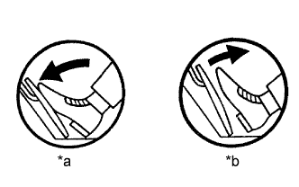

DTC P2121 Неисправность в цепи датчика положения педали/дроссельной заслонки "D", обусловленная выходом характеристики за пределы допустимого диапазона / неправильным значением параметра |
| № DTC | Условие обнаружения DTC | Неисправный участок |
| P2121 | Разница между значениями напряжения на контактах VРA и VРA2 составляет менее 0,4 В или более 1,2 В в течение 0,5 с (логика диагностирования за 1 поездку). |
|
| 1.СНИМИТЕ ПОКАЗАНИЯ ПОРТАТИВНОГО ДИАГНОСТИЧЕСКОГО ПРИБОРА (ДАТЧИК ПОЛОЖЕНИЯ ПЕДАЛИ АКСЕЛЕРАТОРА) |
|  |
Подсоедините портативный диагностический прибор к DLC3.
Включите зажигание (IG) и портативный диагностический прибор.
Войдите в следующие меню: Powertrain / Engine and ECT / Data List / ETCS / Accelerator Position No. 1 и Accelerator Position No. 2.
Считайте значение, отображенное на диагностическом приборе.
| Состояние педали акселератора | Accelerator Position No. 1 | Accelerator Position No. 2 |
| Отпущена | 0,5-1,1 В | 1,2-2,0 В |
| Нажата | 2,6-4,5 В | 3,4-5,0 В |
| *a | Нажата |
| *b | Отпущена |
| Результат | Следующий шаг |
| OK | А |
| NG | B |
|
| ||||
| B | |
| 2.ПРОВЕРЬТЕ ЖГУТ ПРОВОДОВ И РАЗЪЕМ (ДАТЧИК ПОЛОЖЕНИЯ ПЕДАЛИ АКСЕЛЕРАТОРА - ECM) |
Отсоедините разъем датчика положения педали акселератора.
Отсоедините разъем ЭБУ.
Измерьте сопротивление в соответствии со значениями, приведенными в таблице ниже.
| Контакты для подключения диагностического прибора | Условие | Заданные условия |
| A19-6 (VPA) - G56-6 (VPA) | Всегда | Менее 1 Ом |
| A19-5 (EPA) - G56-3 (EPA) | Всегда | Менее 1 Ом |
| A19-4 (VCPA) - G56-4 (VCPA) | Всегда | Менее 1 Ом |
| A19-3 (VPA2) - G56-5 (VPA2) | Всегда | Менее 1 Ом |
| A19-2 (EPA2) - G56-1 (EPA2) | Всегда | Менее 1 Ом |
| A19-1 (VCP2) - G56-2 (VCP2) | Всегда | Менее 1 Ом |
| Контакты для подключения диагностического прибора | Условие | Заданные условия |
| A19-6 (VPA) или G56-6 (VPA) - масса | Всегда | 10 кОм или более |
| A19-5 (EPA) или G56-3 (EPA) - масса | Всегда | 10 кОм или более |
| A19-4 (VCPA) или G56-4 (VCPA) - масса | Всегда | 10 кОм или более |
| A19-3 (VPA2) или G56-5 (VPA2) - масса | Всегда | 10 кОм или более |
| A19-2 (EPA2) или G56-1 (EPA2) - масса | Всегда | 10 кОм или более |
| A19-1 (VCP2) или G56-2 (VCP2) - масса | Всегда | 10 кОм или более |
Подсоедините разъем датчика положения педали акселератора.
Подсоедините разъем ECM.
|
| ||||
| OK | |
| 3.ЗАМЕНИТЕ ДАТЧИК ПОЛОЖЕНИЯ ПЕДАЛИ АКСЕЛЕРАТОРА В СБОРЕ |
Замените датчик положения педали акселератора в сборе (Нажмите здесь).
| ДАЛЕЕ | |
| 4.ПРОВЕРЬТЕ, ВОЗОБНОВЛЯЕТСЯ ЛИ ВЫВОД DTC (DTC ДАТЧИКА ПОЛОЖЕНИЯ ПЕДАЛИ АКСЕЛЕРАТОРА) |
Подсоедините портативный диагностический прибор к DLC3.
Включите зажигание (IG) и портативный диагностический прибор.
Сбросьте коды DTC (Нажмите здесь).
Запустите двигатель.
Дайте двигателю поработать на холостом ходу в течение 15 секунд.
Войдите в следующие меню: Powertrain / Engine and ECT / DTC.
Считайте коды DTC.
| Результат | Следующий шаг |
| P2121 | А |
| Коды не выводятся | B |
|
| ||||
| А | ||
| ||